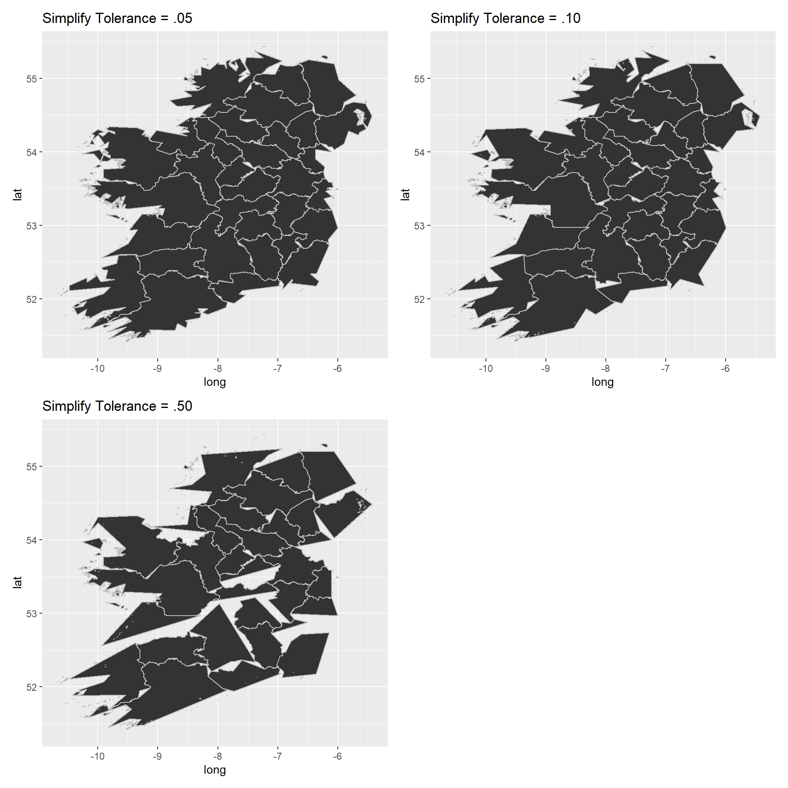
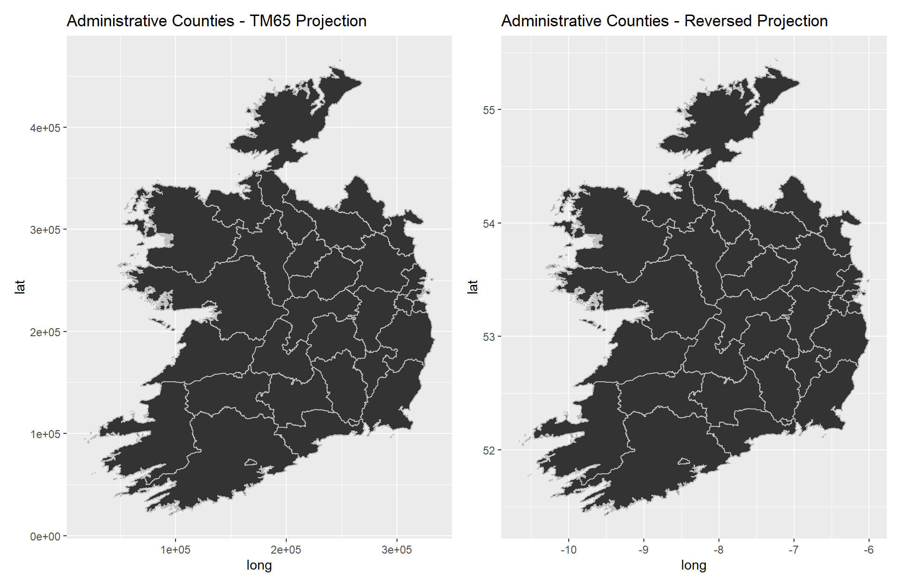
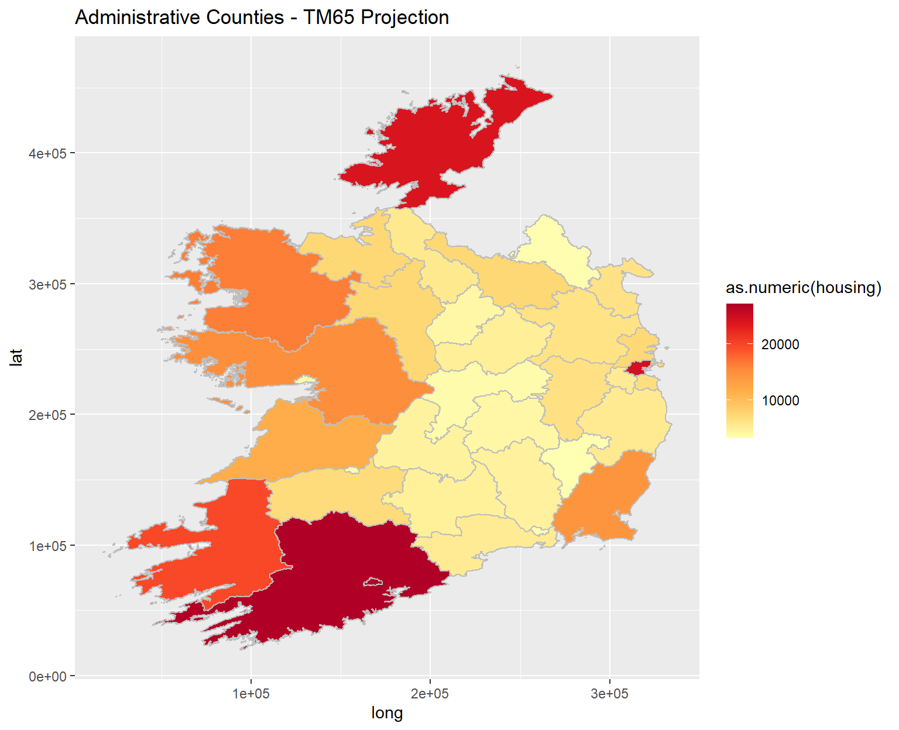

R and the ggplot library provide an extremely flexible framework for the plotting and visualisation of data. Plots can be extended to not just traditional line and bar plots but also to geospatial visualisations (or choropleths)
In order to plot geospatial information, we need to import “shapefile” data into R. On wikipedia a shapefile is defined as:
“The shapefile format is a geospatial vector data format for geographic information system (GIS) software. It is developed and regulated by Esri as a mostly open specification for data interoperability among Esri and other GIS software products”
Effectively the shapefile is just a means of storing a vector or polygon - in this case the counties are just polygons that we will be plotting to form the map.
The shapefiles are sourced from the following repository of shapefiles from the University College Dublin library:link. Shapefiles for Irish counties are sourced from OpenStreetMap and cna be downloaded here:link
Once the shapefile is downloaded, it can be imported into R using the rgdal and regos function. We will also use broom to convert the shapefile into a dataframe for plotting using ggplot.
The following code imports our shapefile from the path directory. For this example, I’m using the counties shapefile from OpenStreetMap link.
Shapefiles can be incredibly detailed however we don’t necessarily need a very high level of resolution to plot the map. In the code below we use the gSimplify function to simplify our shapefile, using three different tolerance levels. We will then see how this impacts on the plotted data.
library(rgdal)
library(rgeos)
library(broom)
spdf <- readOGR(file.path(path,"./data"), layer = "counties", verbose=FALSE)
spdf@data$id <- rownames(spdf@data)
spdf.df_simp05 <- tidy(gSimplify(spdf, tol=0.05, topologyPreserve = TRUE))
spdf.df_simp10 <- tidy(gSimplify(spdf, tol=0.10, topologyPreserve = TRUE))
spdf.df_simp50 <- tidy(gSimplify(spdf, tol=0.50, topologyPreserve = TRUE))Once the shapefiles are imported, I created three separated plots, visualising the output. The plots themselves are very basic but can be customised using ggplot notation:
p1 <- spdf.df_simp05 %>%
ggplot(.) +
aes(long, lat, group=group) +
geom_polygon(colour="grey") +
labs(title='Simplify Tolerance = .05')
p2 <- spdf.df_simp10 %>%
ggplot(.) +
aes(long, lat, group=group) +
geom_polygon(colour="grey") +
labs(title='Simplify Tolerance = .10')
p3 <- spdf.df_simp50 %>%
ggplot(.) +
aes(long, lat, group=group) +
geom_polygon(colour="grey") +
labs(title='Simplify Tolerance = .50')# Visualising the plots
p1 + p2 + p3 + plot_layout(ncol = 2)
Based on the plots above the tolerance level of 0.05 looks best suited to give the appropriate trade off between plot resolution and detail. At a tolerance level of 0.50, the plot breaks down; using 0.10 we can see the results are reasonably ok iwth some degradation in detail along the coastlines.
Once we have decided on a tolerance level for the shapefile resolution, the following code appends the County names to the shapefile. This will be useful when plotting county level detail and linking to external data sources:
# We can add the county names to the shapefile
county_ids <- as.data.frame(cbind(id = spdf@data$id, region = spdf@data$NAME_TAG))
spdf.df <- inner_join(spdf.df_simp05, county_ids, by="id")library(csodata)
# importing data from the CSO dataset
tbl1 <- cso_get_data("EA052")In census reports the country is divided into 29 counties/administrative counties and the five Cities which represent the local authority areas. In order to plot Census data, we need to visualise these administrative regions.
spdf <- readOGR(file.path(path,"./data"), layer = "Census2011_Admin_Counties_generalised20m", verbose=FALSE)
spdf@data$id <- rownames(spdf@data)
spdf.df <- tidy(gSimplify(spdf, tol=0.05, topologyPreserve = TRUE))As an optional step, we can reverse the projection method (TM65) used by the CEO datasets into traditional latitude and longitude coordinates:
library(proj4)
tm65 <- "+proj=tmerc +lat_0=53.5 +lon_0=-8 +k=1.000035 +x_0=200000
+y_0=250000 +a=6377340.189 +b=6356034.447938534 +units=m +no_defs"
# reverse the projection on long/lat
newlonglat <- project(
cbind(spdf.df$long, spdf.df$lat),
proj=tm65, inverse=TRUE)
# replace long/lat with the new ones
spdf.df.reversed <- spdf.df
spdf.df.reversed$long <- newlonglat[,1]
spdf.df.reversed$lat <- newlonglat[,2]Finally, we can visualise the plot output as follows:
p1 <- spdf.df %>%
ggplot(.) +
aes(long, lat, group=group) +
geom_polygon(colour="grey") +
labs(title='Administrative Counties - TM65 Projection')
p2 <- spdf.df.reversed %>%
ggplot(.) +
aes(long, lat, group=group) +
geom_polygon(colour="grey") +
labs(title='Administrative Counties - Reversed Projection')
# plotting the output:
p1 + p2 + plot_layout(ncol = 2)
county_ids <- as.data.frame(cbind(id = spdf@data$id, region = spdf@data$COUNTYNAME))
spdf.df <- inner_join(spdf.df, county_ids, by="id")
housing <- as.data.frame(cbind(id = spdf@data$id, housing = as.numeric(spdf@data$VACANT2011)))
spdf.df <- inner_join(spdf.df, housing, by="id")p1 <- spdf.df %>%
ggplot(.) +
aes(long, lat, group=group) +
geom_polygon(colour="grey") +
labs(title='Administrative Counties - TM65 Projection') +
aes(fill=as.numeric(housing)) +
scale_fill_distiller(palette = 'YlOrRd', direction=1, guide='colorbar')
p1 